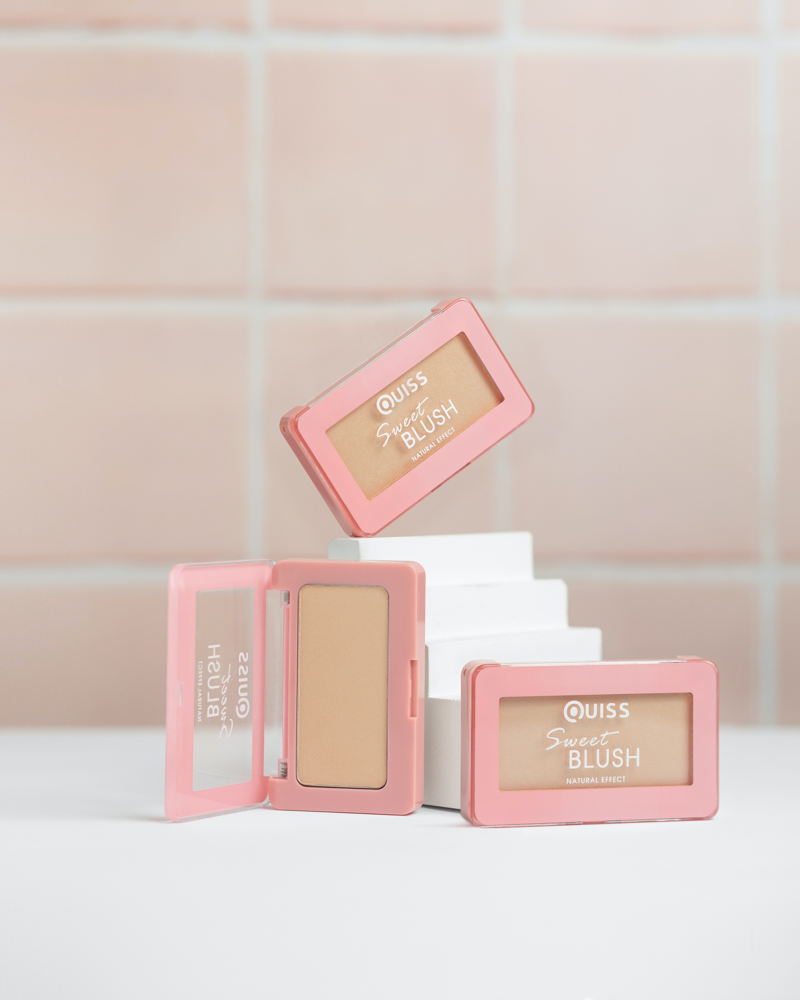

개코의 오픈 스튜디오
2012년부터 시작된 블로그로, 오랜 시간 꾸준히 운영되고 있다. 블로그 운영자는 뷰티 유튜브 채널도 운영하고 있으며, 117,675명이 이 블로그를 구독하고 있다. 뷰티 제품 외에 패션 및 네일에 대한 포스팅도 함께 볼 수 있다.

썸블리
'썸블리'라는 뷰티 유튜브 채널도 함께 운영중이며, 블로그와 유튜브에서 꾸준히 활동하고 있다. 15,142명이 이 블로그를 구독하고 있다. 블로그를 통해 메이크업 이외에 패션, 일상 등의 포스팅도 함께 볼 수 있다.

제라큐
스킨케어, 헤어 및 바디, 메이크업 등 다양한 뷰티 분야에 대해 다룬다. 블로거가 가장 자신있어 하는 분야는 스킨케어 분야로, 다양한 스킨케어 제품을 리뷰하고 있다. 블로거는 여름쿨톤, 복합성, 민감피부로 해당하는 타입이 있다면 도움이 많이 될 것으로 생각된다.